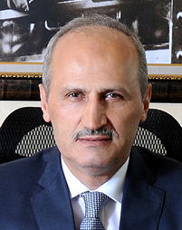

Digital Government Factsheet 2019
Turkey
Table of Contents
Digital Government Highlights 6
Digital Government Political Communications 7
Digital Government Legislation 10
Digital Government Governance 15
Digital Government Infrastructure 19
Digital Government Services for Citizens 27
Digital Government Services for Businesses 38
Country Profile
Basic data
Population: 80 810 525 inhabitants (2018)
GDP at market prices: 753 904 million Euros (2017)
GDP per inhabitant in PPS (Purchasing Power Standard EU 28=100): 66 (2017)
GDP growth rate: 7.4% (2017)
Inflation rate: 16.3% (2018)
Unemployment rate: 10.9% (2017)
General government gross debt (Percentage of GDP): 28.3%(2017)*
General government deficit/surplus (Percentage of GDP): -2.77% (2017)**
Area: 783 562 km²***
Capital city: Ankara
Official EU language: Turkish
Currency: Turkish lira (TRY)
Source: Eurostat (last update: 15 March 2019), Trading Economics*, Fiscal Balances and public debt - OECD**, Worldatlas***
Digital Government Indicators
The following graphs present data for the latest Digital Government Indicators for Turkey compared to the EU average. Statistical indicators in this section reflect those of Eurostat at the time the Edition is being prepared.
Percentage of individuals using the internet for interacting with public authorities in Turkey | Percentage of individuals using the internet for obtaining information from public authorities in Turkey |
Percentage of individuals using the internet for downloading official forms from public authorities in Turkey | Percentage of individuals using the internet for sending filled forms to public authorities in Turkey |
Digital Government State of Play
The graph below is the result of the latest eGovernment Benchmark report, which monitors the development of eGovernment in Europe, based on specific indicators. These indicators are clustered within four main top-level benchmarks:
- User Centricity – indicates to what extent (information about) a service is provided online and how this is perceived.
- Transparency – indicates to what extent government are transparent regarding: i) their own responsibilities and performance, ii) the process of service delivery and iii) personal data involved.
- Cross-Border Mobility – indicates to what extent EU citizens and businesses can use online services in another country.
- Key Enablers – indicates the extent to which five technical pre-conditions are available online. There are: Identification (eID), Electronic documents (eDocuments), Authoritative Sources, and Digital Post. Digital Post refers to the possibility that governments communicate electronically-only with citizens or entrepreneurs through e.g. personal mailboxes or other digital mail solutions.
These top-level benchmarks are measured using a life-events (e.g. mystery shopping) approach. Eight life events are included in the overall eGovernment performance score. Four of these life events were measured in 2013, 2015 and 2017 and the other four were measured in 2012, 2014, 2016, and again in 2018. The life events measured in 2017 were Regular business operations, Moving, Owning and driving a car and Starting a small claims procedure. The life events measured in 2018 are Business start-up, Losing and finding a job, Family life and Studying.
Source: eGovernment Benchmark Report 2018 Country Factsheet
Digital Government Highlights
Digital Government Political Communications
Digital Government Legislation
The Regulation Regarding Principles of Implementation of Integrated Public Financial Management Information System was published in the Official Gazette on 26 June 2018.
Digital Government Governance
A Digital Transformation Office of the Presidency was established in 2018 to coordinate the digital transformation of public institutions.
Digital Government Infrastructure
The eInvoice application was implemented in 2010. This system provides security, time and cost saving between buyer and seller using a single format and standard. eInvoice is XML based in accordance with UBL-TR standards. Users send, get and submit invoices with this system. As of 3 April 2019, there were 102 395 eInvoice users. This system is accessible both via eFatura and the eGovernment Gateway.
Digital Government Services
- Tourist Guidance License applications, validations and updated information operations can be accessed via the dedicated eGovernment Travel Information Portal.
- With the Single Window Port Application Service, agencies and public institutions can use the same database for foreign trade procedures, including permissions or notifications. Furthermore, registered company vehicles can be queried by using the eGovernment portal.
Digital Government Political Communications
Specific political communications on digital government
2016 - 2019 National eGovernment Strategy and Action Plan
Four strategic aims, 13 objectives and 43 actions were determined in line with the vision of 2016-2019 National eGovernment Strategy and Action Plan. The following strategic aims were determined to achieve the vision an eGovernment ecosystem:
- Strategic Aim 1: Ensuring Efficiency and Sustainability of the eGovernment Ecosystem;
- Strategic Aim 2: Implementing Common Systems for Infrastructure and Administrative Services;
- Strategic Aim 3: Realising eTransformation in Public Services;
- Strategic Aim 4: Enhancing Usage, Participation and Transparency.
The developments in the scope of the 2016-2019 eGovernment Action Plan are summarised below:
- The institutions carry out the process and method transformation studies to provide all the services as eGovernment services.
- Electronic Document Management System is used in all central institutions.
- MERSIS, which is a registry for businesses, is integrated into the eGovernment Gateway
- Data dictionary studies have been started.
- Services such as job search, employment, unemployment and retirement applications can be done via eGovernment Gateway.
- Certificate of inheritance interrogation can be obtained from the eGovernment Gateway.
- Many service steps for vehicle acquisition and registration have become available from the eGovernment Gateway. Efforts are underway to provide services in a holistic manner.
- Applications for the consumer arbitration committee can be made via eGovernment Gateway.
- A social media guide for public institutions was prepared and published in 2019.
The Ministry of Transport, and Infrastructure is responsible for the eGovernment Strategy and the Action Plan.
The portal http://www.edevlet.gov.tr/ offers a means for participation and monitoring of the progress of the Action Plan and allows users and authorities to share announcements.
Tenth Development Plan (2014 - 2018)
One of the objectives and policies of the Plan was ‘Qualified People, Strong Society’, which included the title ‘eGovernment Applications in Public Services’.
The main aim of the Plan was to establish an eGovernment structure that provided services designed in accordance with user needs, including disadvantaged groups, in a user-oriented, collaborative, integrated and reliable manner through various platforms by ensuring personal data privacy and information security. This contributed to an effective, participative, transparent and accountable public administration.
eGovernment activities were executed with an effective public management approach, and by a powerful coordinator authority, which will ensure strong management and coordination.
The required basic information systems for eGovernment service delivery were completed. Efforts to establish shared infrastructure and setting common standards continued. Common applications were expanded in the public sector, including local authorities. In this context, the completion of MERSİS, TAKBİS, Spatial Address Registration System (MAKS), EKAP, the National Geographical Information System Infrastructure and Information Systems Disaster Management Centre projects was prioritised. Institutional eGovernment projects continued to be created within the framework of common action plans.
eGovernment applications and services will continue to be developed and integrated to the eGovernment Gateway. The distribution of the new eID card to all citizens were completed and the widespread use of eGovernment services were ensured. eCorrespondence Project, which provided an electronic environment for official correspondence among public agencies, was expanded. There were also issues regarding interoperability, mobile applications, eParticipation, sharing and re-using of public data.
Key enablers
Access to public information
No political communication was adopted in this field to date.
eID and Trust Services
No political communication was adopted in this field to date.
Security aspects related to digital government
The National Cyber Security Strategy and Action Plan
The National Cyber Security Strategy and Action Plan (2016-2019) was implemented in 2016. Furthermore, in accordance with the by-law on eGovernment Services, ‘Standards of Web Service’ and ‘Service Security’, documents were shared with all stakeholders in 2018 to ensure improved data exchange.
Interconnection of base registries
No political communication was adopted in this field to date.
eProcurement
No political communication was adopted in this field to date.
Domain-specific political communications
No political communication was adopted in this field to date.
Interoperability
No political communication was adopted in this field to date.
Emerging technologies
No political communication was adopted in this field to date.
Digital Government Legislation
Specific legislation on digital government
eGovernment Legislation
Presidency Decree no. 1 gives the Digital Transformation Office the duty and the responsibility of coordinating digital transformation of the public sector.
Furthermore, Presidency Decree no. 1 gives the Ministry of Transport and Infrastructure the duty and responsibility to prepare and implement the principles and procedures regarding the implementation of eGovernment services.
The By-law on Principles and Procedures Regarding the Implementation of eGovernment Services was published in the Official Gazette on 3 September 2016, no. 29820. The By-law included the responsibilities of the Ministry, public institutions, the contractor of the operator of eGovernment gateway, principles and monitoring procedures.
In addition, on 11 October 2018, Presidency Circular (2018/13) was published in the Official Gazette. According to this Circular, all public services including the ones provided electronically should be provided in line with the Once Only Principle, which means that all applications of citizens shall be completed expeditiously at the point of application.
Key enablers
Access to public information
Freedom of Information Legislation
The Right to Information Act (Law No. 4982) went into effect in April 2004. The Act was supplemented by a Circular on ‘The Exercise of the Right of Petition and Access to Information’, issued by the Prime Ministry. The law granted citizens and legal entities the right to information from public institutions and private organisations that qualify as public institutions. Following the enforcement of the Act in April 2004, all public institutions established Right to Information Units and started to accept information requests including those made through the Internet. In November 2005, the Right to Information Act was amended to enable citizens to dispute all decisions of state agencies regarding denials of requests for information.
Re-use of Public Sector Information (PSI)
The Re-use of Public Sector Information (PSI) is partly covered by the Right to Information Act (Law No. 4982). In addition, the eTransformation Turkey 2005 Action Plan facilitated the reuse of public sector information and documented and identified eGovernment metadata standards enabling access to information kept in public agencies was published on the web. The 2016–2019 National eGovernment Strategy and Action Plan, there are actions regarding the reuse and sharing of Public Sector Information like reformation of public sector information and establishment of the Open Data and Sharing Portal, Public Expenditure and Monitoring Portal.
eID and Trust Services
Law No. 5070 on Electronic Signature
The Law on Electronic Signatures was enacted in 2004. The purpose of this law was to define the principles for the legal and technical aspects and application of electronic signatures. The law covered the legal status of electronic signatures, operations concerning electronic signatures and the activities of Electronic Certificate Service Providers (ECSPs). The law ensured that qualified electronic signatures, produced according to the identified procedures, had the same legal impact as that of handwritten signatures. At the end of 2018, there are almost 2 million qualified electronic certificates in active use. In addition, digital signature-ready eID cards were distributed in 2018.
By-Law on the Procedures and Principles Pertaining to the Implementation of Electronic Signature Law
The By-law on the Procedures and Principles Pertaining to the Implementation of Electronic Signature Law was introduced. Six electronic certificate service providers were authorised as of May 2019. The Public Certificate Centre is the responsible body to provide electronic certificate services to all public institutions. The Centre was established by a Prime Minister’s circular which mandated that all public institutions needing electronic certificate services acquire the service from this body.
Law No. 6661, Amending Law on Military Service Law and Other Laws
According to Article 8 and 12 of Law 6661, biometric data could be embedded into the new eID cards and those cards could be used for authentication purposes. Digital signature-ready eID cards were also started to be distributed in 2018.
Security aspects related to digital government
Privacy and Protection of Private Life
Section 5 of the 1982 Turkish Constitution is entitled, Privacy and Protection of Private Life. Article 20 of the Turkish Constitution addresses the issue of 'Privacy of the Individual’s Life', and states: ‘Everyone has the right to demand respect for their private and family life. Privacy of individual and family life cannot be violated. Unless there exists a decision duly passed by a judge in cases explicitly defined by law… neither the person nor the private papers, nor belongings of an individual shall be searched nor shall they be seized’. With the 2010 amendment of the Constitution, citizens were granted the right to request the protection of their personal data. They have the right to be informed about their own personal data, accessing these data, requesting to be corrected or deleted and learning whether it has been used for the purposes that the data were obtained in the first place. Thus, individual data can be processed only as foreseen by the law or with the consent of the person, as mentioned in Article 22.
Law on the Protection of Personal Data
The Law on Protection of Personal Data was published in the Official Gazette on 7 April, 2016, no. 29677. This law regulated the conditions of processing and transfer of the personal data, rights and obligations, obligations of the data controller and data processor and the establishment of Data Protection Authority.
Law no 5809, Electronic Communications Law
ICTA (Information and Communication Technologies Authority) was given the power to take necessary measures to fight against cyberattacks to ensure national cyber security by Law 5809, Article 60 para10. Also, according to Law 5809, Article 60 para 11, ICTA had the right to ask any kind of information, documents, records, data from any legal private and public entities and real persons. According to Article 60 para 11 of the same law, ICTA enjoyed the power to enforce and impose sanctions (resulting in a monetary penalty between TLY 1 000 – 1 000 000 (between EUR 155 – 1 550)) on these entities in case they don’t take necessary measures to fight against cyberattacks.
Article 51 of Law 5809 has provisions regarding the protection of privacy and processing of personal data in the electronic communication sector, and the conditions under which cross border flow of traffic, and location data is allowed.
By-Law on Network and Information Security in Electronic Communications Sector
The By-Law, which was adopted on 13 July 2014, identified the obligations of operators with respect to network and information security in electronic communications sector. It covered the principles and basis of measures to be taken in order to eliminate the risks stemming from threats and vulnerabilities with the aim of ensuring data, hardware-software and personnel security. It explicitly stated that personal information processing and protection of privacy are not under its scope.
Council of Europe's Convention on Cybercrime
Turkey ratified the Council of Europe’s Convention on Cybercrime (ETS No.185), which covers various crimes such as those committed via the Internet and other computer networks, computer-related fraud, child pornography and violations of network security. All these cybercrimes are now incorporated within the national legislation of Turkey. Turkish criminal code covers unauthorised access of IT systems, unauthorised interference/interception/modification/destruction of IT systems. Persons who convicted these crimes are subjected to prison sentence up to three years or fines.
Law on Regulating Broadcast in Internet and Combating Crimes Committed through Such Broadcast (2007)
Law no. 5651, which aims to combat some specific crimes committed through Internet, was published in the Official Gazette of 23 May 2007, Issue 26530. The law aims to fight nine catalogue criminal offences committed through Internet publications. These offences concern committing suicide, sexual harassment of children, facilitating the use of drugs, supplying drugs which are dangerous for health, obscenity, prostitution, providing place and opportunity for gambling, crimes determined in Law No. 5816. Law No. 5651 was amended in 2008, 2013, 2014 and 2016.
Regulation Regarding Electronic Notification
The Regulation Regarding Electronic Notification was published in the Official Gazette on the 6 December 2018.
Interconnection of base registries
By-law on Procedures for the Provision of Public Services
In the context of the once-only principle implementation, the Presidency is reviewing the By-law on Procedures for the Provision of Public Services, so that no document is required by a public institution if the data is provided by another public institution. The new legal text, in the form of Presidential Decree is planned to be published in 2019.
Regulation Regarding Data Sharing of Land Registry and Cadastre
The Regulation Regarding Data Sharing of Land Registry and Cadastre was published in the Official Gazette on the 1 November 2018. The purpose of the regulation was to regulate the procedures and principles regarding establishment, duties, powers and responsibilities of the General Directorate of Land Registry and Cadastre under the Ministry of Environment and Urbanisation to plan, execute and ensure the renewal and updating cadastral work of the immovable property, to create land register, ensuring the archiving and protection, mapping, to determine production standards and to ensure archiving.
The By-Law on Identity Registry System Sharing
The By-Law on Identity Registry System Sharing was published on 8 December 2006. Its provisions regarded procedures for sharing the electronic information available in the identity registry with public organisations.
Regulation Regarding Principles of Implementation of Integrated Public Financial Management Information System
The Regulation Regarding Principles of Implementation of Integrated Public Financial Management Information System was published in the Official Gazette on 26 June 2018.
The purpose of this Regulation was to determine the procedures and principles regarding the obligations of the authorised data storage organisation, the manner in which the information was reported to the data storage organisation and the tasks to be performed by this organisation.
eProcurement
Public Procurement Law No. 4734
Law No. 4734, published on 22 January 2002, enabled the implementation of electronic public procurement. Further amendments were introduced to the Law in 2011 so as to regulate the procedures and principles for the conduct of Electronic Public Procurement Platform tenders. The amended law introduced normative issues of tenders, sets the preparation for the tender process and lays the rules for the preparation, submission, opening and evaluation of eTenders.
Regulation Regarding Change on Electronic Procurement Implementation
The Regulation Regarding Change on Electronic Procurement Implementation was published in the Official Gazette on the 19 June 2018, and 16 March 2019.
The purpose of this regulation was to modify Regulation Regarding Electronic Procurement Implementation. The purpose of the Regulation Regarding Electronic Procurement Implementation was to regulate the procedures and principles regarding the realisation of the tenders within the scope of the Public Procurement Law in a partially or fully electronic platform.
Domain-specific legislation
eCommerce Legislation
Law No.6563 on eCommerce was published on 23 October 2014. The law regulated the principles and procedures regarding eCommerce, the liabilities of eCommerce service providers and intermediaries, electronic contracts, spam, disclosure responsibilities and penalties to be applied in case of breach.
Authorisation Communiqué on the Implementation of Investment Incentive Certificate Transactions in Electronic Environment
The Authorisation Communiqué on the Implementation of Investment Incentive Certificate Transactions in Electronic Environment was published in the Official Gazette on the 31 May 2018.
Law Regarding Improvement of the Investment Environment
The Law Regarding Improvement of the Investment Environment was published in the Official Gazette on the 15 February 2018. This law included several articles referring to the digitalisation of public data and data exchange electronic platforms.
Regulation Regarding Service Providers and Agent Service Providers in Electronic Commerce
The purpose of this Regulation was to regulate procedures and principles regarding the general information that service providers are obliged to keep on the network, the information they need to provide to the buyers and other applications related to electronic commerce. The Regulation Regarding Service Providers and Agent Service Providers in Electronic Commerce was published in the Official Gazette on 15 February 2019.
Regulation Regarding the Activities, Studies and Auditing Principles of the Data Storage Organisations
The Regulation Regarding the Activities, Studies and Auditing Principles of the Data Storage Organisations was published in the Official Gazette on 19 September 2018.
The purpose of this Regulation was to determine the procedures and principles regarding the obligations of the authorised data storage organisation, the manner in which the information to be reported to the data storage organisation, and the tasks to be performed by this organisation.
Interoperability
Interoperability Principles in Public Information Systems
Circular No. 2009/4 on Interoperability Principles in Public Information Systems has been in use since 2009.
Emerging technologies
No legislation was adopted in this field to date.
Digital Government Governance
National
Policy
Digital Transformation Office of the Presidency
Digital Transformation Office of the Presidency was established to coordinate digital transformation of public institutions.
Dr. Ali Taha KOÇ Head of Digital Transformation Office of the Presidency Contact details: T.C. Cumhurbaşkanlığı Külliyesi 06560 Bestepe- Ankara Phone: +90 312 525 41 01 E-mail: ali.t.koc@cbddo.gov.tr Source: http://www.cbddo.gov.tr/ |
Ministry of Transport and Infrastructure
According to Presidential Decree no. 1, the Directorate of Communications under the Ministry of Transport and Infrastructure has the duty and responsibility to determine principles and procedures regarding the implementation of eGovernment services. It does this through ensuring the coordination and collaboration with relevant public agencies and organisations and preparing and monitoring the progress of action plans on eGovernment services in line with the information society policies and strategies.
|  | Mehmet Cahit TURHAN Minister - Ministry of Transport and Infrastructure Contact details: Ministry of Transport and Infrastructure Ulaştırma ve Altyapı Bakanlığı Hakkı Turaylic Caddesi No: 5 06338 Emek/Ankara Phone: +90 312 203 11 11 Fax: +90 312 212 49 30 E-mail: okm@uab.gov.tr Source: http://www.uab.gov.tr/ |
 | Dr. Ömer Fatih SAYAN Deputy Minister - Ministry of Transport and Infrastructure Contact details: Ministry of Transport and Infrastructure Ulaştırma ve Altyapı Bakanlığı Hakkı Turaylic Caddesi No: 5 06338 Emek/Ankara Phone: +90 312 203 11 38 Fax: +90 312 212 41 87 E-mail: of.sayan@btk.gov.tr Source: http://www.uab.gov.tr/ |
Gökhan EVREN General Manager of the Directorate of Communications Ministry of Transport and Infrastructure Contact details: Ministry of Transport and Infrastructure Ulaştırma ve Altyapı Bakanlığı Hakkı Turaylic Caddesi No: 5 06338 Emek/Ankara Phone: +90 312 203 18 40 Fax: +90 312 212 41 87 E-mail: gokhan.evren@btk.gov.tr Source: http://www.uab.gov.tr/ |
Sezen YEŞİL Head of eGovernment Services Department - Directorate of Communications - Ministry of Transport and Infrastructure Contact details: Ministry of Transport and Infrastructure Ulaştırma ve Altyapı Bakanlığı Hakkı Turaylic Caddesi No: 5 06338 Emek/Ankara Phone: +90 312 203 18 77 Fax: +90 312 212 41 87 E-mail: sezen.yesil@uab.gov.tr Source: http://www.uab.gov.tr/eng |
Implementation
No responsible organisations were reported to date.
Support
TURKSAT Inc.
Prof. Dr. Cenk ŞEN CEO of TURKSAT (Turksat Satellite Communication Cable TV and Operation Inc.) Contact details: TURKSAT Konya Yolu 40. Km. Gölbaşı / ANKARA Phone: +90 312 615 3000 Fax: +90 312 4995115 E-mail: info@turksat.com.tr Source: http://www.turksat.com.tr/ |
Base registry coordination
No responsible organisations were reported to date.
Audit
Turkish Court of Accounts
Data Protection
DPA (Data Protection Authority)
DPA (Data Protection Authority) is responsible for the protection of personal data in all fields including eGovernment related systems and services.
Subnational (federal, regional and local)
Policy
Local Administrations
Municipalities devise their respective eGovernment policies in compliance with the 2016 - 2019 National eGovernment Strategy and Action Plan, within the limits of their respective competences.
The operator of the eGovernment gateway began integrating the eServices of the municipalities to the gateway in April 2014. As of June 2019, 312 municipalities out of 72 cities provided eGovernment services on the gateway.
Furthermore, the eMunicipality application was implemented by the Ministry of Interior Affairs and work was underway to cover all municipalities.
Coordination
No responsible organisations were reported to date.
Implementation
No responsible organisations were reported to date.
Support
No responsible organisations were reported to date.
Base registry coordination
No responsible organisations were reported to date.
Audit
No responsible organisations were reported to date.
Data Protection
No responsible organisations were reported to date.
Digital Government Infrastructure
Portals
eGovernment Gateway (e-Devlet Kapısı)
As of June 2019, eGovernment Gateway had 4 808 services, 601 integrated organisations, and more than 42 million users. To ensure accessibility and user-friendliness, the eGovernment Gateway is made accessible through the eGovernment Gateway call centre. The call centre, specifically designed for disabled people, started to operate for eGovernment related requests in 2018. The accessibility of the eGovernment Gateway was accredited according to the ISO 9241-151 and ISO/IEC 40500 standards.
Mobile eGovernment
Public Apps Centre
The eGovernment systems are not used only for G2C but for also G2G services, which reduces the amount of official papers exchanged among public agencies. The number of G2G services reached 129 as of the end of 2018.
SSO Service
The eGovernment Gateway provides SSO (Single Sign-On) service to other public agencies so that secure, reliable and single authentication service centre can be used for many public services. The number of such services reached 1 318. The most used services in this category are job security monitoring, eHealth, eJustice and retirement monitoring services.
MERSIS and eGovernment portal
The Centralised Legal Persons Information System (MERSİS) was integrated in the eGovernment portal. Authorised employees can perform operations on behalf of a legal person in the eGovernment portal.
Integrated Public Service Platform (Kamu Uygulamaları Merkezi)
The eGovernment Gateway provides data sharing via a secure infrastructure (VPN- Virtual Private Network) among public institutions. In this way, an institution which requires data from another institutions, benefits from a secure and single connection to the eGovernment Gateway without having to connect with each institution one by one. There is a web-based application that works on the eGovernment Gateway and, also a service-based application. In the web-based application, working on kamu.turkiye.gov.tr, there is a mechanism that employees of public institutions are appointed to use. In this way, civil servants can only see the permitted information within the authorisation given by the related public institution. With service-based application, institutions can share data with each other without requiring any authorisation within specified rules. For example, by using Public Service Platform (PSP), universities can check the military service status (info provided by Ministry of Defence) of the students online by utilising national ID numbers of students.
National Judiciary Informatics System (UYAP)
Also, private and public institutions pursue their own related cases via institutional portals. Experts, working as an expert for any court, can get information about their cases from their home or offices without going to court through the expert portal.
All UYAP users can access technical or personal training times with the independent and non-spatial eLearning portal. Furthermore, it is possible to be informed about cases via SMS info system. Thanks to advanced technology, executive sales processes are now carried out in a transparent manner in electronic form through the eSales portal.
CİMER (Presidential Communication Centre)
CİMER (Cumhurbaşkanlığı İletişim Merkezi – Presidential Communication Centre) is the channel for the citizens to request documents and information online as well as make comments, proposals etc. for public institutions.
UUP (National Transportation Portal - Ulusal Ulaştırma Portali)
Developed under the Ministry of Transport and Infrastructure, the UUP portal provides multi-location transportation information.
Automatic Pass Toll System
This Customer Information Service for users accessing toll roads (HGS (Fast Transit System) deals with access to toll roads (e.g. by annual subscription, electronic access, permits) using HGS (Fast Transit System) and traces the transitions and balance of HGS Sticker Accounts. The following information can be requested:
- Information about how to register for access to toll roads;
- Procedures in how to register for access to toll roads;
- Procedures in how to use toll roads and how to place HGS stickers on the windshields appropriately;
- Query the account balance and tag account status (by registering);
- Query the past transitions of the vehicle (by registering);
- Query the violations and fines of the plate number related with the transitions on toll roads if exists (without registering the customer service site).
Saglik-Net portal
The aim of the portal is to present continuous information to different levels of users through a standard interface from a unique address. The components of the portal are: announcements, data presenting interfaces, applications, decision support system, forums and the management interfaces. With the use of eID cards, it will act as a Personal Health Record (PHR) System and hence enable to access personal Electronic Health Records, enable online reservations and Tele-consultation with the family physicians.
Networks
PublicNET (KamuNET)
eGovernment Gateway software and hardware
The maximum level of security was achieved in the domestic eGovernment Gateway with the installation of software and hardware that enables Turkish citizens to utilise electronic public services securely.
In September 2018, eGovernment gateway network equipment was renewed. Thanks to the renewed devices; the network capacity of the eGovernment Gateway increased by approximately 10 times, the number of processors and disks on the system increased by approximately 2 times, and the RAM of the servers has increased by 3.5 times. The increasing demand has been met smoothly and the eGovernment Gateway continues to provide service to over 40 million registered citizens without any problem.
eTax infrastructure
The Ministry of Treasury and Finance implemented a nationwide communications network to streamline administrative workflows and allow citizens to submit their tax returns online. The system connects tax offices, regional finance offices and tax inspector offices of the Revenue Administration. Citizens can submit tax returns via the Internet and call up their tax file online whenever they want. All tax data is centrally stored in a data warehouse system, and access to the system is secured by the use of digital signatures and encrypted data transfer via a Public Key Infrastructure (PKI).
Tax Department Automation Project (VEDOP – Vergi Dairesi Otomasyon Projesi)
The integration of MERSİS (register for legal persons) and VEDOP was done in 2016 so that the registry processes of businesses could be completed easily.
eDeclaration Application
Another application provided by the Ministry of Treasury and Finance is the eDeclaration application, which enables citizens to make or accept declarations, announcements and appendices via the Internet. Integration and data exchange with external systems such as banks is also provided. As of the end of 2018, almost 94 million e-declarations were received.
Data Exchange
Online Environmental Impact Assessment (ÇED) Management System
Environmental impact assessment reports for some investment projects such as crude oil refineries, nuclear plants, metal industry plants, dams, ports etc are required before the projects are approved. The Ministry of Environment and Urbanisation examines the reports and then, approves or rejects the reports, or require additional information from the applicants. All these processes can be done electronically in an efficient, faster and more transparent manner through the Online Environmental Impact Assessment Management System (eÇED) which was deployed in 2012. After each stage of the assessment process, the investor (applicant) is informed by SMS and e-mail. Since 2013, applications for exemption from the liability of providing environmental impact assessment report could also be done via eÇED. The mobile app version is available too. Thanks to this eCED system, 300 tons of paper and 132 000 tons of water saved on average annually.
eID and Trust Services
MERNIS
The ‘MERNIS’ Central Population Management System, operational since January 2003, assigns a unique ID-number for about 120 million Turkish citizens, both alive and deceased, which can be used in many eServices. It allows computerised birth certificates and transactions. KPS (ID Information Sharing System) is another function of MERNIS, which enables public agencies having appropriate security authorisations to access ID information.
MERNIS is a centrally administered system where any changes in civil status are registered electronically in real time over a secure network by the 966 civil registration offices spread throughout the country. The information kept in the central database is shared with the public and private agencies for administrative purposes. The aim of the system is to ensure the up-to-datedness and secure sharing of personal information and therefore increase the speed and efficiency of the public services provided to the citizens. The services provided by MERNIS are as follows:
- Modernisation of civil registration services by transferring the civil registries into electronic form;
- Assignment of a unique Turkish Republic Identity Number to every Turkish national;
- Provision of on-line exchange of personal information using the identity numbers as identifiers;
- Provision of better demographic statistics using information technologies;
- Enabling easy, fast and secure delivery of public services to the users by sharing identity information with public sector institutions and agencies, thus reducing bureaucracy.
KPS (Kimlik Paylaşımı Sistemi - The Identity Information Sharing System)
The Identity Information Sharing System (abbreviated KPS in Turkish) went into operation in 2005 as an extension of MERNIS. Public institutions and agencies can access ID information stored in MERNIS database via the KPS under strictly specified conditions in the respective access protocols. KPS works over a Virtual Private Network and every user is assigned with a username and password. The system keeps logs of every user and the conducted enquiries.
KPS offers the following enquiry services:
- Web Sites;
- Enquiry of personal information using the TR Identity Number;
- Enquiry of TR Identity Number using personal information;
- Enquiry of identity information based on information of the place of registration;
- Enquiry of copy of civil status records using various criteria;
- Web services (XML Infrastructure).
Users of the system are able to conduct inquiries by accessing KPS web services using add-ons to their existing applications or by developing new applications. They are also able to view the enquired data directly from their own applications and automatically update their own databases with the enquired information.
In order for the agencies to benefit from KPS, an agreement must first be concluded with the General Directorate of Civil Registration and Nationality.
Electronic Identity Management System Application
An identification verification system consisting of a user ID and a password is used in the eGovernment services provided by government agencies, and each agency produces its own IDs and passwords. Some government agencies meet their identification verification needs using eSignature and mobile signature. Turksat is developing and offering to agencies applications whereby identification verification systems like password, eSignature and mobile signature will work in an integrated manner.
Electronic Citizenship Card
According to a Prime Ministry Circular, issued on 4 July 2007, on an electronic citizenship card pilot project, the electronic Citizenship Card will be exclusively used for ID verification purposes. The Circular specifies both the characteristics of the card as well as the project’s implementation process.
The Citizenship Card, which is actually a smart card, will exclusively contain static information necessary to perform ID verification, but no dynamic data such as health information, address, among other such data. The card will enable ID verification with different credentials such as visual security elements, pin code and biometric data (fingerprint). The biometric data will be held exclusively on the card and will not be stored in a central database. The card is going to replace the currently used national identity cards. In addition, the characteristics of the card enable its usage in any service requiring secure ID verification, such as online eGovernment services, financial transactions, among other services.
In accordance with the Circular, a three-stage pilot project has already been implemented in the area of social security and health. Completed pilot projects were redesigned once again and another pilot implementation of the eIDs is underway.
The integration of new generation Citizen Cards with eGovernment Gateway has finished. With this application, citizens can use these cards for authentication and connection to the eGovernment Gateway.
Applications of the new ID cards started on 14 March 2016, in Kırıkkale. A further application began in 10 pilot cities in October 2016. Since 2017, the new eID cards have been available throughout the country. The new eID cards include a built-in eSignature feature and if the owner gets the qualified eCertificates for secure eSignature. It can be used for access to eGovernment services.
AKS (Adres Kayıt Sistemi – Address Registration System)
The system is integrated with the Central Civil Registration System (MERNIS) where records such as the ‘Name, Surname, Mother’s and Father’s Name, Place of Birth and Information on Civil Status Events’ related to the identity of the person are stored and accessed using the Turkish Republic Identity Number (TR Identity Number).
In this scope, a national address database was established using a standard address form set out by the municipalities and provincial special administrations, following which the address data held on this database was matched with the corresponding personal data using the TR Identity Numbers.
The system aims to reduce costs and provide faster and more efficient public services, and therefore reduce bureaucratic problems faced by the users of the services.
Pursuant to the provision contained in the Turkish Civil Code stating that ‘change of a domicile address is subject to the acquirement of another one’, the previous address of the person entered in the AKS is automatically deleted and archived following the declaration of a new domicile address.
As stated above, a declaration by the person is sufficient for the entry of the new addresses into the system. However, in cases of “a suspicious declaration,” civil registration officials have the power to instigate enquiry and file criminal complaints with the judicial authorities for the imposition of imprisonment and cash fines set out in the Civil Registration Services law. The address change declaration can be done electronically by eSignature.
eProcurement
Electronic Public Procurement Platform (EKAP)
The eProcurement infrastructure was updated according to the amendments in procurement legislation published in the Official Gazette on the 19 June 2018, and 16 March 2019.
Electronic Sale Project (eSale)
With the Electronic Sales Project, all sales services are transformed to electronic media and available through internet.
eInvoicing
eInvoice application
The eInvoice application was implemented in 2010. This system provides security, time and cost saving between buyer and seller with single format and standard. eInvoice is XML based in accordance with UBL-TR standards. Users send, get and submit invoices with this system. As of 3 April 2019, there were 102 395 eInvoice users. The system is accessible both via eFatura and eGovernment Gateway.
ePayment
eGovernment Gateway
The eGovernment Gateway has an infrastructure for electronic payment transactions. Payment is made to public institutions via credit card. Within the last 12 months, seven municipalities have been integrated with ePayment integration on eGovernment Gateway.
Private ePayment organisations have been operating under the supervision of BDDK (Banking Regulatory Authority). In 2018, the number of such organisations reached 14.
Knowledge Management
Digital Content
Digital Content is primarily kept in libraries. The National Library is currently transferring its collection into a digital environment, so that the content can be put into public service upon the completion of the digitisation. The Turkish Board of Higher Education (YOK) has been collecting thesis completed in Turkish universities and hospitals since 1987. A web-based database is open to researchers for bibliographic information. To provide easy access to the full text of a thesis, a project called 'National Digital Thesis Database' was carried out by YOK and digitisation of almost 140 000 theses have been completed and are available through the Internet.
Cross-border platforms
Cooperation with Azerbaijan
Base registries
System of Base Registries
Centralised Legal Persons Registry System (MERSIS)
MERSIS, developed by the Ministry of Trade, is a central information system designed for two basic functions. The first function is to provide businesses with the ability to complete commercial registry, update and cancellation procedures electronically. The second function is to assign all legal persons and other economic entities (public agencies, chambers, traders, trade unions, associations, etc) a unique number and to combine them in a single database so that the information on the legal persons could be provided to public agencies requesting it. Nearly 50 institutions and organisations can access to legal persons’ information by using MERSIS. Besides, in 2018 MERSIS was integrated to the eGovernment Gateway which enabled legal persons to log in to the gateway.
Digital Government Services for Citizens
The information in this section presents an overview of the basic public services provided to the Businesses. These were identified taking inspiration from Your Europe, a website which aims to help citizens do things in other European countries – avoiding unnecessary inconvenience and red tape in regard to moving, living, studying, working, shopping or simply travelling abroad. However, the categories used in this factsheet aim to collect a broader range of information, focusing therefore not only on cross-border services, but also on national services.
The groups of services for citizens are as follows:
- Travel
- Work and retirement
- Vehicles
- Residence formalities
- Education and youth
- Health
- Family
- Consumers
Travel
Documents you need for travel in Europe | |
Passport | |
Responsibility: | Central Government, General Directorate of Security |
Website: | |
Description: | Information and online application for appointment facilities. |
Passenger rights | |
VAT refunds and excise duties | |
Responsibility: | The Revenue Administration (Internet Tax Office) |
Website: | |
Description: | Information and online application after authentication. |
Travel information portal | |
Responsibility: | Ministry of Culture and Tourism |
Website: | https://www.turkiye.gov.tr/kultur-ve-turizm-bakanligi- yeni-ruhsatname-3950 |
Description: | Tourist Guidance License application, validation, updating information operations can be done via eGovernment portal. |
Travel Guide | |
Responsibility: | The Ministry of Foreign Affairs |
Website: | http://www.mfa.gov.tr/yurt-disina-seyahat-edeceklere-konsolosluk-rehberi.tr.mfa |
Description: | An online guideline for travelling abroad includes security alerts about certain destinations. |
Security and Emergencies | |
Health Guide | |
Responsibility: | The Ministry of Health, General Directorate of Borders and Coasts Health |
Website: | |
Description: | All the health-related information (vaccinations, alerts, etc.) is presented and described. |
Package travel and timeshare | |
Tourist Guidance License app | |
Responsibility: | Ministry of Culture and Tourism |
Website: | https://www.turkiye.gov.tr/kultur-ve-turizm-bakanligi- yeni-ruhsatname-3950, http://www.mfa.gov.tr/yabancilar-icin-rehber.tr.mfa, https://www.tursab.org.tr/ |
Description: | Tourist Guidance License application, validation, updating information operations can be done via the eGovernment portal for foreigners |
Work and retirement
Working abroad, finding a job abroad, retiring | |
Job search services by labour offices | |
Responsibility: | Central Government, Turkish Labour Institution, Social security Institute. |
Website: | |
Description: | Public and private sector job and employee search transactions, as well as job applications, can be made online. |
Resignation notice | |
Responsibility: | Social Security Institute |
Website: | https://www.turkiye.gov.tr/sgk-esgkuyg-esgksifre-ise-giris-isten-ayrilis |
Description: | Job quit notifications can be done via the eGovernment portal. |
Professional qualifications | |
Professional Competence Institute | |
Responsibility: | Professional Competence Institute |
Website: | |
Description: | Information on professional competences is available online. |
Unemployment & Benefits | |
Unemployment benefits | |
Responsibility: | Central Government, Turkish Labour Institution |
Website: | https://www.iskur.gov.tr/; https://www.aile.gov.tr; https://www.turkiye.gov.tr/hizmetler |
Description: | Online information and application for unemployment insurance. |
Integrated Social Assistance Information System | |
Responsibility: | Ministry of Family, Labour and Social Policies |
Website: | https://www.turkiye.gov.tr/aile-bakanligi-sosyal-yardim-bilgileri-sorgulama; https://www.ailevecalisma.gov.tr/sygm |
Description: | |
Taxes | |
Income taxes: declaration, notification of assessment | |
Responsibility: | Central Government, Revenue Administration, Ministry of Treasury and Finance |
Website: | |
Description: | Information on all types of tax for which declaration is needed; forms can be submitted electronically. The eDeclaration application provides acceptance of declarations, announcements and appendices via the Internet, along with integration and data exchange with external systems. The Internet Tax Office of the Revenue Administration enables taxpayers to follow their tax transactions. |
E-Notification Application Process | |
Responsibility: | Revenue Administration |
Website: | |
Description: | This is an eGovernment service, which allows taxpayers to make tax declarations electronically. |
Vehicles
Cars | |
Bar Code Vehicle Inspection Report Inquiry and Verification | |
Responsibility: | Ministry of Transport and Infrastructure |
Website: | https://www.turkiye.gov.tr/udhb-barkodlu-arac-muayene-raporu-sorgulama ; http://www.tuvturk.com.tr/plaka-sorgulama.aspx |
Description: | Periodic Vehicle Inspection is the examination of the technical competence of vehicles. Users can see their inspection result with this service. |
Towed Vehicle Parking Lot | |
Responsibility: | Central Government, General Directorate of Security |
Website: | |
Description: | Towed Vehicle Parking Lot Information can be accessed by eGovernment portal. |
Driving Licence | |
Driver’s licence | |
Responsibility: | Central Government, Directorate General of Civil Registration and Citizenship Affairs |
Website: | |
Description: | Information and online application appointment facilities are available in 81 provinces. |
Insurance | |
Insurance guide | |
Responsibility: | Insurance Information and Monitoring Centre |
Website: | |
Description: | Insurance info (health, life, car, traffic, etc) can be accessed via the eGovernment gateway. |
Registration | |
Car registration (new, used, imported cars) | |
Responsibility: | The Police Department |
Website: | |
Description: | Sales, transfer, and registration transactions of second-hand vehicles are carried out and electronically completed by Notaries; personal applications are made to Notaries. Information is available for the registration of new cars. |
Residence formalities
Residence rights | |
Announcement of moving (change of address) | |
Responsibility: | Central Government, Directorate General of Civil Registration and Citizenship Affairs |
Website: | |
Description: | Change of address transaction can be completed online. |
Housing (building and housing, environment) | |
Responsibility: | Local Governments, Municipalities |
Website: | www.ankara.bel.tr/ (example) |
Description: | Relevant information is provided by some of the municipalities. |
Settlement (Residential) and Other Addresses and Inquiry Document Verification | |
Responsibility: | Central Government, Directorate General of Civil Registration and Citizenship Affairs |
Website: | https://www.turkiye.gov.tr/nufus-ve-vatandaslik-isleri-genel-mudurlugu |
Description: | By using this service, you can inquire settlement address information, get the barcoded document and verify the document. |
Electricity and Natural Gas Subscription | |
Responsibility: | Service Provider Companies |
Website: | https://www.turkiye.gov.tr/enerjisa-baskent-elektrik-bireysel-abonelik-basvurusu; https://www.turkiye.gov.tr/igdas-abonelik-sozlesmesi-basvurusu |
Description: | Electricity and Natural Gas Subscription applications can be done via the eGovernment portal. |
Document and formalities | |
Certificates (birth, marriage): request and delivery | |
Responsibility: | Central Government, Directorate General of Civil Registration and Citizenship Affairs |
Website: | |
Description: | Provides information and application. |
Declaration to the police (e.g. in case of theft) | |
Responsibility: | Central Government, Turkish National Police |
Website: | |
Description: | Online application is available. |
Passport | |
Responsibility: | Central Government, Directorate general of Migration Management |
Website: | |
Description: | Information application is available. |
Education and youth
School & University | |
Enrolment in higher education/university | |
Responsibility: | Central Government, Ministry of Education, The Council of Higher Education, Universities and Institutes |
Website: | http://www.yok.gov.tr/; http://www.metu.edu.tr/
|
Description: | Electronic pre-registration transactions can be completed online by some universities. |
Information in higher education/university (GSB applications) | |
Responsibility: | Council of Higher Education |
Website: | https://www.turkiye.gov.tr/yuksekogretim-mezun-belgesi-sorgulama (https://www.turkiye.gov.tr/yuksekogretim-kurulu-baskanligi) |
Description: | With this service, you can view your university graduation information and create a barcoded university graduate document. |
e-School (MEBBIS) | |
Responsibility: | Ministry of National Education |
Website: | |
Description: | This system includes all the processes from the beginning of student life, from kindergarten through graduation. State and private primary schools, kindergartens, special education institutions, secondary education institutions use the e-School system. |
Non-formal Education Certificate Information Questioning | |
Responsibility: | Ministry of National Education |
Website: | http://www.unevoc.unesco.org/wtdb/worldtvetdatabase_tur_en.pdf |
Description: | These certificates are different to those awarded through the formal education and training system and can currently only be provided via a process of validation. This is because the process of aligning the formal and non-formal curricula in relation to the standards is still ongoing. Non-formal education is provided primarily through short courses, public training, apprenticeship training and distance learning in public and private schools which operate under the coordination of the Ministry of National Education. It provides educational services in line with the general aims and basic principles of national education to citizens who have never entered or who are at a certain level of the formal education system, or who have left formal education. |
Public libraries (availability of catalogues, search tools) | |
Responsibility: | Central Government, Ministry of Culture and Tourism, National Library of Turkey |
Website: | |
Description: | Catalogue browsing and book reservation transactions can be completed via the website of the National Library. Collective catalogue browsing service has started to be provided under the Integrated eLibrary System. Bibliographic record browsing can be done in around 1 132 automated libraries through the website of the General Directorate of Libraries and Publications. |
Student grants | |
Responsibility: | Central Government, General Directorate of Higher Education Credit and Hostels Institution (Kredi Yurtlar Kurumu) |
Website: | http://www.kyk.gov.tr/; https://www.turkiye.gov.tr/hizmetler |
Description: | Student grants, credit and hostel applications can be completed online and information related to the results and debt status can also be accessed online. |
Cinema Support Application Services | |
Responsibility: | Ministry of Culture and Tourism |
Website: | http://www.sinema.gov.tr/TR,143929/basvurular.html; https://www.turkiye.gov.tr/kultur-ve-turizm-bakanligi |
Description: | You can apply for Cinema Support on the following topics: Animation Film Production Support, Research and Development Support, Documentary Film Production Support, Director Support to Perform the First Movie, Short Film Production Support, Scenario and Dialogue Writing Support, Long Feature Film Production Support, Post-Build Support. |
Dormitory Applications and Dormitory Registration Service | |
Responsibility: | Ministry of Youth and Sports |
Website: | |
Description: | In 2018, the Dormitory Applications and Dormitory Registration Service was started by the Ministry of Youth and Sports via the eGovernment Gateway. It has approximately 5 million users. Registrations for the universities could be done through the eGovernment Gateway. |
Researchers | |
Information and assistance to researchers, research funding support | |
Responsibility: | EURAXESS Turkey |
Website: | https://euraxess.ec.europa.eu/information/search/country/turkey-1051 |
Description: | EURAXESS Turkey provides information and assistance to mobile researchers – by means of the web portal and with the support of the national EURAXESS Service Centres. The portal contains practical information concerning professional and daily life, as well as information on job and funding opportunities for researchers. The Turkish website is currently under construction. |
Public libraries (availability of catalogues, search tools) | |
Responsibility: | Central Government, Ministry of Culture and Tourism, National Library of Turkey |
Website: | |
Description: | Catalogue browsing and book reservation transactions can be completed via the website of the National Library. Collective catalogue browsing service has started to be provided under the Integrated eLibrary System. Bibliographic record browsing can be done in around 1 132 automated libraries through the website of the General Directorate of Libraries and Publications. |
Health
Healthcare | |
Family Medicine Information System (FMIS) | |
Responsibility: | Ministry of Health |
Website: | |
Description: | The FMIS application is based on the principle that each individual has a family physician to take care of his health. Thus, everybody shall have a physician whom he addresses directly in every issue concerning his health problems. The data concerning the processes carried out by Family Physicians can be delivered to the Ministry electronically and securely by FMIS. The application of FMIS is one of the concrete eHealth applications, which will find the possibility of the most common usage in the entire country. |
Health related services (interactive advice on the availability of services in different hospitals; appointments for hospitals) | |
Responsibility: | Central Government, Ministry of Health |
Website: | http://www.saglik.gov.tr/EN/; http://sivasnumunedh.saglik.gov.tr/; https://www.mhrs.gov.tr/Vatandas/ |
Description: | Online information is provided by hospitals through their websites. But the main website for appointments from public hospitals is ‘central hospital appointment system’ portal (mhrs). Also, appointments for all hospitals through a central call centre are possible. Furthermore, online appointments are available at certain hospitals. |
National Health Data Dictionary (NHDD) | |
Responsibility: | Ministry of Health |
Website: | |
Description: | NHDD was published in 2007 under the eHealth Strategy of Turkey and consisted of 46 data sets and 261 data elements. NHDD is a dictionary which is a reference on the issue of health in the entire country. The Meta data definitions and format determined within the NHDD establish an online reference for the information systems used at health care institutions. Complementary to the NHDD is the provision of the Health Coding Reference Server (HCRS) that provides a reference to a common coding/classification system that shall be used through the country for this type of data to support standardisation of this data. |
National Health Information System (NHIS) | |
Responsibility: | Ministry of Health |
Website: | |
Description: | The National Health Information System (NHIS) is a compilation of Saglik-Net, the National Health Data Dictionary, Minimum Health Data Sets and the Health Coding Reference Server together with some other technologies such as digital security mechanisms in order to provide a nation-wide infrastructure for easy and efficient sharing of electronic health records in the form of minimum health data sets. The aim is to collect health data from all healthcare institutions scattered over the country. |
Medical costs (reimbursement or direct settlement) | |
Responsibility: | Central Government, Social Security Institution |
Website: | |
Description: | Online information about health insurance and application forms are available. Pharmacy automation system allows online transactions between pharmacies and the Social Security Institution. |
eNabız Project (ePulse Project) | |
Responsibility: | Ministry of Health |
Website: | |
Description: | The aim of the project is to present continuous information in one portal to different types of patients. The components of the portal are: announcements, data presenting interfaces, applications, decision support system, forums and management interfaces. With the use of eID cards, it will act as a Personal Health Record (PHR) System and hence enable patients to access personal Electronic Health Records, online reservations and tele-consultation with family physicians. |
Dynamic – Sport Information System (National Sports Application) | |
Responsibility: | Ministry of Youth and Sports |
Website: | https://www.turkiye.gov.tr/gsb-spor-bilgi-sistemi; https://dinamik.sgm.gov.tr |
Description: | Dynamic – Sport Information System provides digitalisation of all sports-related workflows and data. In this context, individuals are able to view self-information, can obtain verifiable documents and can fill out applications throughout the eGovernment gateway. |
General practitioner change online | |
Responsibility: | Ministry of Health |
Website: | |
Description: | Citizens can change family doctor by using the eGovernment portal. |
Family
Children and couples | |
Child allowances | |
Responsibility: | Central Government, Social Security Institution |
Website: | |
Description: | Child allowances payments are made to the insured employees. |
Adoption application | |
Responsibility: | Republic of Turkey Minister of Family, Labour And Social Services |
Website: | https://www.turkiye.gov.tr/aile-ve-sosyal-politikalar-evlat-edinme-hizmeti |
Description: | Adoption applications can be done via the eGovernment portal. In addition, Social Economic Support Applications can be made. |
Certificates (birth, marriage): request and delivery | |
Responsibility: | Central Government, General Directorate of Census and Citizenship |
Website: | |
Description: | Provides information on the necessary procedures to obtain a birth or marriage certificate but will soon be able to provide more advanced services through the MERNIS system. |
Consumers
Shopping | |
Consumer protection (National Judiciary Informatics System (UYAP)) | |
Responsibility: | Ministry of Justice |
Website: | |
Description: | UYAP is an eJustice system developed to ensure a fast, reliable, and accurate judicial system. Each judicial unit is connected to other units by a secure network and given access to legal sources such as legislation, case law, bulletins and circulars. Citizens can reach and check on their case information via the Internet, and be informed of the day fixed for the trial without appearing in court. They can be informed via a website about their cases or hearing dates. They can submit their claims to court by using their electronic signature and examine their files through the Internet. Lawyers can file a suit, submit any document to courts and pay case fee from their office by using their electronic signature through the Internet, etc. |
e-tender (T. C. Customs and Ministry of Commerce e-Procurement Mobile App) | |
Responsibility: | Ministry of Trade |
Website: | |
Description: | Official app for mobile devices which allows users to perform the following operations mobile devices:
|
Marketplace prices inquiry | |
Responsibility: | Republic of Turkey Ministry Of Trade |
Website: | https://www.turkiye.gov.tr/gumruk-ve-ticaret-fiyat-bilgisi-sorgulama |
Description: | Marketplace prices inquiry can be done via the eGovernment portal. |
Digital Government Services for Businesses
The information in this section presents an overview of the basic public services, which were identified by the European Commission and Member States under the Your Europe initiative that is an EU site designed to help citizens do things in other European countries – avoiding unnecessary inconvenience and red tape in regard to doing business abroad.
The groups of services for businesses are as follows:
- Running a business
- Taxation
- Selling in the EU
- Human Resources
- Product requirements
- Financing and Funding
- Dealing with Customers
Running a business
Intellectual property | |
Intellectual property | |
Responsibility: | Turkish Patent Institute |
Website: | https://www.ip-coster.com/IPGuides/c/intellectual-property-turkey |
Description: | The following services are available online: patent search and file tracking, trademark search and file tracking, industrial design search and file tracking. |
Start-Ups, Developing a business | |
Registration of a new company | |
Responsibility: | Central Government, Republic of Turkey Ministry of Trade |
Website: | https://www.companyformationturkey.com/register-company-turkey |
Description: | Since 1 January 2014, one of the phases of the MERSIS project is that active and corporate bodies are able to make new registration over the system electronically, all over the country. MERSIS launched a web service pool in 2016. After a protocol is assigned, the receiving side can reach millions of records. Nearly 50 institutions and organisations can get corporate body info, partnership info, etc. by using MERSIS. MERSIS is compatible with new generation browsers and mobile devices. |
Owner / Partner / Authorised Commercial Business or Companies | |
Responsibility: | Central Government, Republic of Turkey Ministry of Trade |
Website: | https://www.turkiye.gov.tr/gtb-mersis-sahibi-ortagi-yetkilisi-oldugum-ticari-isletme-veya-sirketler |
Description: | By using this service, you can access your business or company information registered in the Central Registry System with your owner / partner / authority. |
Commercial Business and Company Interrogation | |
Responsibility: | Central Government, Republic of Turkey Ministry of Trade |
Website: | https://www.turkiye.gov.tr/gtb-mersis-sahibi-ortagi-yetkilisi-oldugum-ticari-isletme-veya-sirketler |
Description: | By using this service, users can search among the companies registered in the Central Registry System. |
Foreign trade permissions and notifications | |
Responsibility: | The Police Department |
Website: | https://www.turkiye.gov.tr/emniyet-adima-tescilli-arac-sorgulama-tuzel-kisiler-icin |
Description: | With the Single Window Port Application Service, agencies and public institutions use same database for foreign trade procedures like permissions, notifications. Also registered company vehicles can be queried by using the Government portal. |
Taxation
Excise duties, VAT and business tax | |
VAT: declaration, notification | |
Responsibility: | Central Government, Revenue Administration |
Website: | |
Description: | Statement, accrual, and payment transactions can be done online within the scope of eDeclaration. |
Electronic Payments | |
Responsibility: | Central Government, Revenue Administration |
Website: | |
Description: | Available as an online service. |
Corporate tax: declaration, notification | |
Responsibility: | Central Government, Revenue Administration |
Website: | |
Description: | Online submission of tax forms and payment are available through the eDeclaration and the Internet Tax Office of the Revenue Administration as part of the Tax Offices Automation Project (VEDOP). |
Customs declarations (e-Customs) | |
Responsibility: | Central Government, Ministry of Customs and Trade |
Website: | |
Description: | Custom declarations can be fully submitted in electronic environment. |
Internet Tax Office Application | |
Responsibility: | Central Government, Revenue Administration |
Website: | |
Description: | Another application is the Internet Tax Office of the Revenue Administration, which enables taxpayers to follow their tax transactions such as accrual tax and payments-in. These applications are all parts of the Tax Offices Automation Project (VEDOP). |
Selling in the EU
Public contracts | |
Public procurement / eProcurement | |
Responsibility: | Central Government, Public Procurement Authority |
Website: | http://www.ihale.gov.tr/; https://ekap.kik.gov.tr/EKAP/Default.aspx?ReturnUrl=/EKAP/ |
Description: | The Electronic Public Procurement Platform (EKAP) has been created. The first electronic tender was accomplished on 7 March 2011. The Public Procurement Bulletin is being published in an electronic environment. |
Protection of the competition | |
Responsibility: | Competition Authority |
Website: | |
Description: | The Competition Authority was established as per Article 20 of the Law.4054, in order to ensure the formation and development of markets for goods and services in a free and sound competitive environment. |
Human Resources
Employment contracts | |
Social contributions for employees | |
Responsibility: | Central Government, Social Insurance Institution |
Website: | |
Description: | The eBildirge portal enables employers to send the insurance premium documents of employees via the Internet and to make accrued cost payments via automatic payment or Internet banking. |
Working hours, holiday and leave | |
Working hours | |
Responsibility: | Ministry of Family, Labour and Social Services Security |
Website: | |
Description: | The ministry determines the working hours. |
Social security and health | |
National Council on Occupational Safety and Health Web Portal | |
Responsibility: | Ministry of Family, Labour and Social Services, National Council on Occupational Safety and Health |
Website: | |
Description: | The website of the Ministry of Labour and Social Security contains the necessary information in regard to the legislation related to the safety and health at work. |
Product requirements
CE marking, Standards in Europe | |
Product certification | |
Responsibility: | Turkish Standardisation Institute (TSE) |
Website: | |
Description: | CE marking is provided by TSE. Applications can be submitted online. |
Energy labels, Eco-design requirements, EU Ecolabel | |
Environment-related permits (incl. reporting) | |
Responsibility: | Ministry of Environment and Urbanisation |
Website: | |
Description: | The service for online applications for environment-related permits is available. |
Finance and funding
Accounting | ||
Submission of data to statistical offices | ||
Responsibility: | Central Government, Turkish Statistical Institute | |
Website: | ||
Description: | Businesses are able to send statistical data for some of the questionnaires through the Internet. | |
Dealing with customers
Consumer contracts and guarantees | |
Consumer protection | |
Responsibility: | Ministry of Trade |
Website: | |
Description: | Consumers are protected based on Law.6502. |
Solving disputes with customers | |
Complaints gateway | |
Responsibility: | Ministry of Trade |
Website: | |
Description: | Consumers can file complaints via the eGovernment gateway. |
Data protection | |
Personal data protection | |
Responsibility: | The Data Protection Authority |
Website: | |
Description: | The DPA is body responsible for regulation of personal data protection. |
The Digital Government Factsheets
The factsheets present an overview of the state and progress of Digital Government European countries.
There are published on the Joinup platform, which is a joint initiative by the Directorate General for Informatics (DG DIGIT) and the Directorate General for Communications Networks, Content & Technology (DG CONNECT). This factsheet received valuable contribution from Firat Önal, Ministry of Transport and Infrastructure, General Directorate of Communications, Department of eGovernment.
The Digital Government Factsheets are prepared for the European Commission by Wavestone
An action supported by ISA²
ISA² is a EUR 131 million programme of the European Commission which develops digital solutions that enable interoperable cross-border and cross-sector public services, for the benefit of public administrations, businesses and citizens across the EU.
ISA² supports a wide range of activities and solutions, among which is the National Interoperability Framework Observatory (NIFO) action.
ISA² solutions can be used free of charge and are open source when related to IT.
Contact ISA²
Follow us